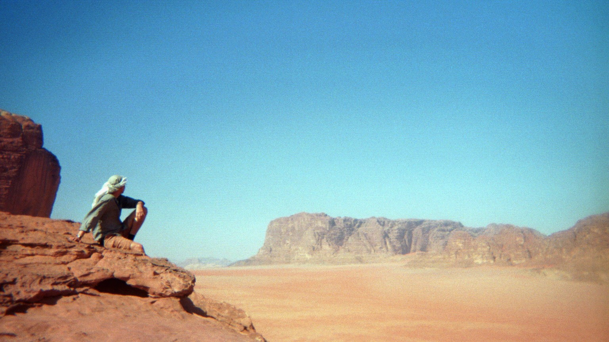

Eg heiter Lucas og eg er lingvistikkstudent som òg hev lura seg inn på arabisk m. millomausten-studiar. Elles er eg nordlending som forvilla seg sudetter. Fyrst til Oslo, og endåtil heilt ned til Jordan våren 2025. Bilætet øvst på denne sida er av meg når eg var i Wadi Ramm. Det er trulega ikkje til undring at eg er huga på mål med tanke på kva eg studerer, men eg er òg serlega glad i orangutangar. Nedanfyre finn de ymist eg hev skrive upp igjenom, m.a. um mitt eige heimemål, vefsnmålet, men òg um klyngder (kunstmål) eg hev emna på.
Nokre av teigane ligg ute på ein blogg eg hev i lag med tvo vener. Tak gjerna ein tur innum og kika på kva dei skriv um!
Discord: singularitas
Bluesky: @singularitas.bsky.social